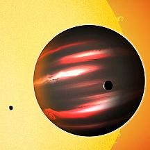

Imagen cortesía de la NASA
Astronomía. TrES-2b se encuentra a sólo 4 millones de kilómetros de su estrella y es tan negro como el carbón, investigadores del Centro de Astrofísica Harvard-Smithsonian y la Universidad de Princeton han revelado otras características particulares
A 750 años luz de nuestro planeta hacia la constelación Draco, se encuentra el mundo más oscuro jamás percibido. Es un exoplaneta del tamaño de Júpiter descubierto en el 2006 que muestra formas bastante extravagantes. De hecho, TrES-2b, como ha sido llamado este gigantesco gaseoso, es más negro que el carbón y refleja “considerablemente menos que la pintura acrílica negra”, sólo el 1% de la luz solar que cae sobre él es manifestada.
“Es realmente un mundo alienígena por lo completamente extraño que es”, dice David Kipping, del Centro de Astrofísica Harvard-Smithsonian y autor principal de este nuevo experimento. “En nuestro sistema solar, Júpiter está cubierto de brillantes nubes de amoníaco que reflejan más de un tercio de la luz solar que lo alcanza. En contraste, TrES, que fue descubierto precisamente por el trasatlántico exoplanetario del mismo nombre, no presenta estas nubes reflectoras debido a su alta temperatura”.
Así es, este mundo está muy cerca de su sol. De hecho, el nuevo planeta oscuro orbita a su estrella a sólo unos 4 millones de kilómetros y por eso permanece tan calientito (la Tierra se encuentra a 150 millones de kilómetros del Sol). De hecho, los rayos solares lo mantienen a tan alta temperatura que ni las nubes de amoníaco pueden formarse en su atmósfera, la temperatura en TrES es muy alta, de 1,800 grados Fahrenheit; estamos hablando entonces de una atmósfera completamente distinta a las que conocemos. El planeta contiene químicos que absorben la luz, como sodio y potasio vaporizados y óxido de titanio gaseoso.
“Sin embargo, ninguno de estos químicos nos explica completamente por qué el planeta es tan oscuro, no estamos claros respecto a ello. Pero sabemos que TrES no es completamente sombrío, está tan caliente que emite un brillo rojo y opaco, algo así como un carbón apagándose o las hornillas de una estufa eléctrica”, explica Kipping.
Otra de las interesantes características de esta raro planeta es que se supone que está anclado a su estrella como la Luna lo está a nosotros, es decir, amarrado por la marea y sus órbitas, por lo tanto, sólo un lado de TrES está siempre frente a la estrella, el otro lado permanece oculto y muestra fases igual que nuestro satélite que a veces está lleno y a veces oscuro; de la misma forma, TrES permanece a veces completamente oculto y en otras muestra ciertos cambios en su casi inexistente luminosidad.
Indisputablemente, uno de los protagonistas principales de esta noticia es Kepler. Los investigadores, el ya mencionado Kipping y David Spiegel de la Universidad de Princeton, utilizaron la nave de la NASA para conseguir ver un poco de TrES porque la nave está diseñada precisamente para medir la brillantez de estrellas distantes con una precisión extrema.
Transformaciones sutiles
“Al combinar la fidelidad de Kepler con observaciones realizadas de 50 órbitas, detectamos cambios sutiles, muy pero muy pequeños, en este exoplaneta y estábamos anonadados, sólo seis partes por un millón. Indudablemente, Kepler pudo lograr una hazaña estupenda al medir cambios de luz visible en el mismo oscuro exoplaneta”, comenta Kipping.
La nave, nos dice la NASA, ha localizado 1,200 candidatos planetarios en su campo de vista y los astrónomos estarán analizando estos datos para decirnos si hay más mundos oscuros o las distintas sorpresas que conforman a todos esos lejanos y todavía desconocidos planetas.
Volver a Noticias
Comentarios
Comments powered by Disqus